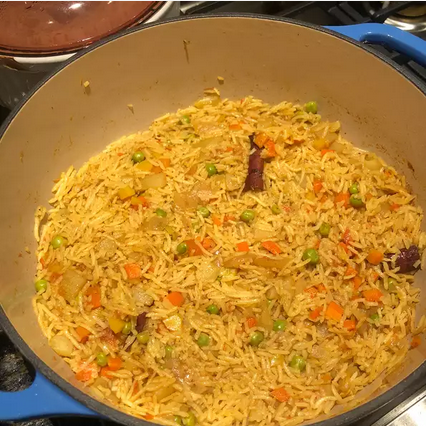

Vegetable Biryani

Description
A very tasty and interesting biryani; the color looks appetizing and the taste is great! It's delicious served with mint
chutney or simple, plain yogurt.
Ingredients
- 2 tablespoons ghee (clarified butter), or olive oil
- 1 red onion, cut into 1/2-inch dice
- 1/2 teaspoon cumin seed
- 1 (1 inch) piece cinnamon stick
- 7 peppercorns
- 1 tablespoon ginger garlic paste
- 1 tomato, diced
- 1/2 cup water
- 1/2 cup peas
- 1/2 cup diced carrots
- 1/2 cup diced potatoes
- 1 cube chicken bouillon
- 1 teaspoon salt
- 1/4 teaspoon ground red chile pepper
- 1/4 teaspoon black pepper
- 1/2 teaspoon garam masala
- 1/4 teaspoon ground turmeric
- 4 cups water
- 2 cups basmati rice, rinsed and drained
Steps
- Melt ghee in a large Dutch oven over medium heat.
- Add onion, and cook until softened, about 3 minutes.
- Stir in cumin seed, cinnamon stick, and peppercorns; cook until the spices are fragrant, and the cumin seeds begin to
pop, about 3 minutes.
- Stir in ginger garlic paste, tomatoes, and 1/2 cup water. Bring to a simmer, and cook until the water has evaporated,
about 5 minutes.
- Stir in peas, carrot, and potato.
- Season with chicken bouillon, salt, red chile, black pepper, garam masala, and turmeric.
- Stir well, then cover, and cook for 3 minutes.
- Pour in 4 cups water and bring to a boil over high heat.
- Once boiling, stir in basmati rice, reduce heat to medium, recover, and simmer for 10 minutes.
- Reduce heat to low and continue to cook until the rice has softened, 10 to 15 minutes more.